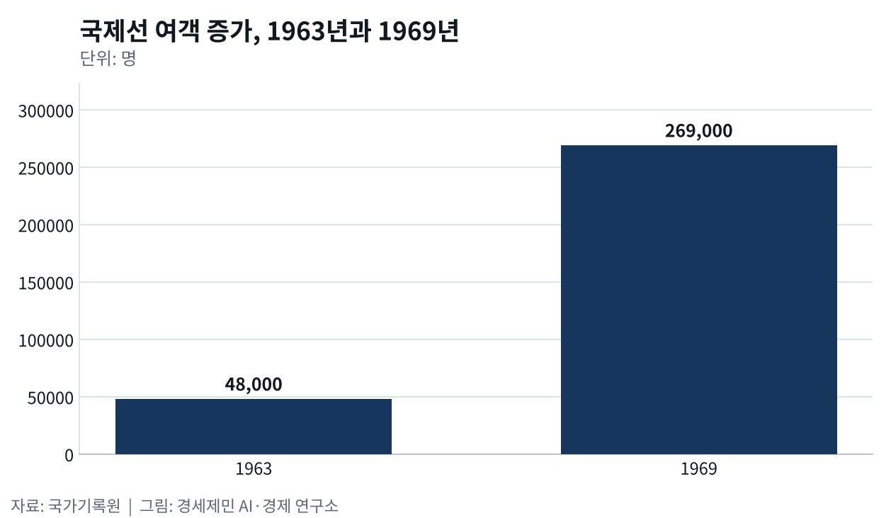
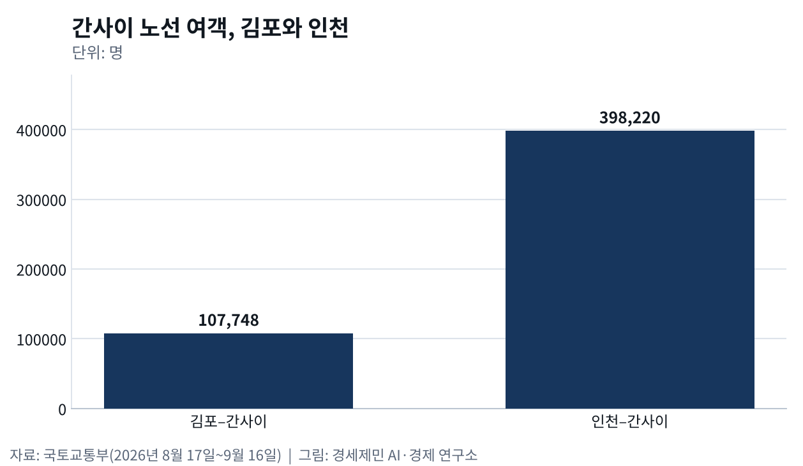

[하늘길, 항공53] 재일교포와 김포-오사카
국교보다 한 해 먼저 열린 서울-오사카 항로
AI경제저널=김갑봉 기자 | 한국과 일본을 잇는 첫 항공 노선은 1964년 3월 17일 서울과 오사카 사이에 열렸다. 두 나라가 국교를 맺은 1965년보다 한 해 앞섰다.
도쿄가 아니라 오사카가 먼저 연결된 까닭이 있다. 오사카는 일제강점기부터 조선 사람이 많이 모여 살던 도시였다. 사람이 먼저 자리를 잡았고 하늘길이 뒤따라 놓인 셈이다.
국교보다 먼저 열린 서울-오사카
1950년대 한국 국제선은 일본이 아닌 쪽으로 먼저 뻗었다. 1958년 1월 미국이 대한국민항공사의 미국 내 전세운항을 승인했고, 1959년 9월 11일에는 서울과 타이페이를 잇는 정기노선이 열렸다.
그해 12월 8일에는 대한국민항공사 DC-4기가 중국인 선원 45명을 태우고 밴쿠버까지 날았다. 정작 가장 가까운 일본 노선이 가장 늦었던 것이다(국가기록원).
한일 노선이 열린 뒤 항공기와 노선이 빠르게 늘었다. 제트기를 들여오면서 1968년 7월 25일에는 서울과 도쿄를 잇는 노선까지 생겼다. 1969년 10월에는 서울에서 오사카와 타이페이와 홍콩과 사이공을 거쳐 방콕까지 가는 노선이 주 3회 떴다.
국제선 여객은 1963년 4만8000여명에서 1969년 26만9000명으로 다섯 배 넘게 늘었다(국가기록원).

배로 건너가 밀항으로 몰린 사람들
그 하늘길이 열리기 전까지 현해탄을 건너는 길은 배뿐이었다. 제주대 탐라문화연구원 김진선은 2023년 『현대사회와 다문화』에 실은 논문에서 1910년부터 1960년대까지 재일제주인의 이동을 살폈다. 일본으로 건너가는 일이 불법 밀항으로 단속되면서 이들이 삶의 터전에서 쫓겨나고 돌아올 길까지 잃었다고 짚었다.
그 선택의 결과는 두 갈래였다. 붙잡히면 강제로 송환됐고, 붙잡히지 않으면 두려움과 차별 속에 재일난민으로 살아야 했다고 이 논문은 적었다. 그럼에도 재일제주인은 스스로 공동체를 만들어 제주를 잇는 연대를 오늘까지 이어 왔다고 봤다. 여권과 항공권을 들고 오사카를 오가는 지금의 왕래는 그런 시간을 지나온 끝에 놓인 길이다.
해방 당시 일본에 있던 조선인 약 200만명 가운데 1946년 무렵까지 90만~140만명이 돌아왔고, 나머지 약 60만명이 일본에 남아 오늘날 재일동포의 뿌리가 됐다.
1959년 12월 14일에는 니가타항에서 첫 북송선이 재일동포 975명을 태우고 떠났고 1984년까지 약 9만3000명이 그 배를 탔다. 남은 사람도 떠난 사람도 배로 움직였다(인천투데이).
김포공항으로 들어온 사람들
재일동포가 고향 땅을 다시 밟은 통로는 김포공항이었다. 국가기록원은 1975년 9월 13일 처음 입국한 조총련계 모국방문단의 모습을 담은 동영상을 2008년 9월의 기록으로 뽑았다.
이들은 2주 동안 머물며 현충사와 불국사를 돌고 울산 현대조선소와 포항제철 같은 공업단지를 둘러봤다. 30~40년 만에 고향을 찾아 가족과 친지를 만났다(국가기록원).
당시 재일동포는 65만여명이었고 그 가운데 95% 이상이 남한 출신이었다. 일제 때 끌려갔다가 해방 뒤 돌아올 기회를 놓친 사람이 대부분이었다. 분단을 거치며 민단과 조총련으로 갈라져 30~40년 동안 고향에 가는 길이 막혔다.
그 세월에 민단계는 일본 안 한국 공관을 성금으로 지어 조국에 기부했고, 조총련계는 유치원부터 대학까지 민족교육 체계를 세웠다(국가기록원).
하나였던 문이 둘이 되기까지
김포공항이 나라의 관문 노릇을 한 시간은 2001년 3월 29일 인천국제공항이 문을 열며 끝났다(국가기록원).
지금 김포공항 국제선이 닿는 곳은 일본과 중국과 타이완뿐이다. 국토교통부 집계를 보면 2026년 8월 17일부터 9월 16일까지 김포에서 정기편이 오간 국제선은 일본 하네다와 간사이와 나고야, 중국 서우두와 다싱과 훙차오, 타이완 쑹산과 가오슝 여덟 도시다. 간사이 노선은 한 달에 620편이 오가며 10만7748명을 실어 날랐다(국토교통부).
같은 기간 인천공항에서 간사이로 오간 편수는 2307편이고 승객은 39만8220명이다. 11개 항공사가 붙은 이 노선 승객이 김포와 간사이 사이의 네 배에 가깝다.
배를 타고 몰래 건너던 바다 위에 이제 문이 둘이다. 그 두 문 너머 일본에 사는 동포는 2024년 12월 31일 기준 96만970명이다(국토교통부·재외동포청).

참고문헌
- 국가기록원, 「김포국제공항, 세계로 날다」, 사진!대한민국 - 공항, https://theme.archives.go.kr/next/photo/aviationList.do?subNo=02
- 행정안전부 국가기록원, "조총련계 재일동포 첫 모국방문, 9월의 기록으로 선정", 2008.9.12., https://www.korea.kr/briefing/pressReleaseView.do?newsId=155313806
- 국가기록원, 「인천국제공항 개항」, 대한민국 정책 변천사, https://theme.archives.go.kr/next/govpo/detail.do?policySeq=323
- 국토교통부 항공정보포털시스템, 「항공운송통계 - 일자별 통계 - 노선」, 2026.8.17.~9.16. 조회분, https://www.airportal.go.kr/stats/transport/dailyRoute.do
- 재외동포청, "2025 재외동포현황 발표", 2025.12.31., https://www.oka.go.kr/web/board/brdDetail.do?menu_cd=000018&num=4224
- 김진선, 「재일제주인의 이주와 밀항의 난민 양상: 1910~1960년대를 중심으로」, 『현대사회와 다문화』 13권 3호, 대구대학교 다문화사회정책연구소, 2023, 1~23쪽, https://www.kci.go.kr/kciportal/ci/sereArticleSearch/ciSereArtiView.kci?sereArticleSearchBean.artiId=ART002988275
- 김갑봉, "[한일수교 60년 번외②] 재일동포는 왜 셋으로 갈라졌고 지금은 어떨까", 인천투데이, 2025.9.25., https://www.incheontoday.com/news/articleView.html?idxno=308887
[사진 출처]
- [사진 1] 高権三, 『大阪と半島人』(1938) 수록, 위키미디어 공용 「Koreans in osaka」(퍼블릭 도메인, 일본 국립국회도서관 디지털컬렉션 원본)
- [도표 1·2] 경세제민 AI·경제 연구소 작성. 자료 국가기록원, 국토교통부
※ 이 기사는 AI 프로그램 클로드를 활용해 작성했습니다.
관련기사
저작권자 © AI경제저널 무단전재 및 재배포, AI학습 및 활용 금지